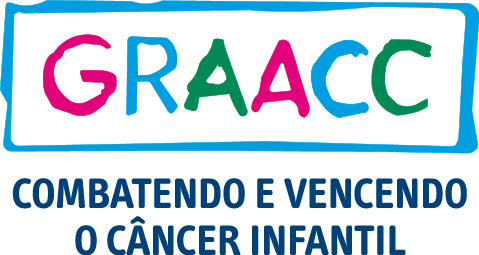
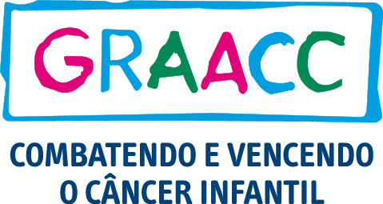

Serviços Sociais
Apoiamos serviços sociais para crianças, e gostaríamos que fizessem parte conosco
Associação de Apoio a Crianças com Câncer

CADI Brasil - Apadrinhe uma Criança

Centro de Apoio a Criança com Câncer

Fundação do Câncer

Apoio ao Câncer Infantil

Núcleo de Apoio a Criança com Câncer

CADI Brasil - Apadrinhe uma Criança
Centro de Apoio a Criança com Câncer
Fundação do Câncer
Apoio ao Câncer Infantil

Núcleo de Apoio a Criança com Câncer